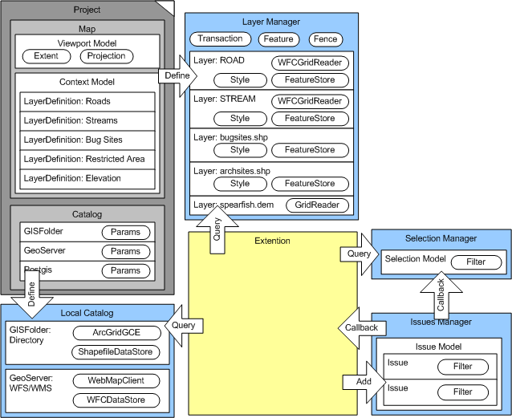

net.refractions.udig
The perspective of operations plug-ins, or scripting is all about manipulating data and interacting with the user.
Use Cases
- provides scripting services based on BeanScript, Jython, Groovy, etc...
- provide facility to load/version java based plug-in
Requirements
Diagram

Design Notes
- consider providing organization for user's scripts? Script to run selection could be independent of a specific script engine
(c) Copyright (c) 2004-2008 Refractions Research Inc. and others.
[wiki]